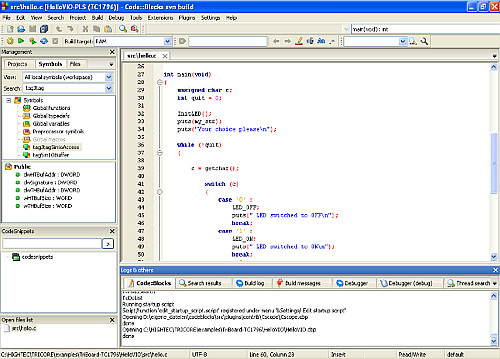
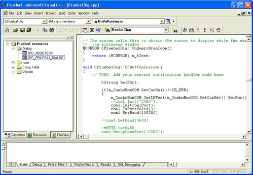
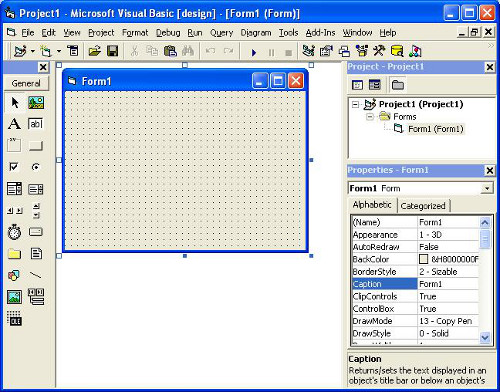

En esta página podrá encontrar algunos ejemplos de códigos fuentes de diversos lenguajes de programación, preparados para ser compilados (en el caso de lenguajes que generen ejecutables) con un IDE (Entorno de Desarrollo Integrado) desarrollado para tal lenguaje. El objetivo de esta página no es el aprendizaje o iniciación a la programación, sino más bien un acercamiento, para que aquellas personas que nunca se han atrevido pierdan el miedo a tanto código extraño 'sin sentido', que al fin y al cabo, sin apenas darnos cuenta es utilizado por todos cada día.
El código aquí expuesto será por lo general corto y sencillo, ya que lo que se pretende es que se pierda el miedo, no provocar más xD. Además, los conocimientos de un servidor son limitados, puesto que que fueron adquiridos con la práctica y constancia con el paso de los años de manera autodidacta y como hobby.
Si nunca ha creado un programa y está harto de esa situación (ha sonado a anuncio de detergente xD), ¡corre! descárgate el Dev-C++ o el Codeblocks y pega este código para crear tu primer programa.
#include <stdio.h>
int main()
{
printf("¡Hola Mundo!\n");
return 0;
}
Si has sido capaz de crear un nuevo proyecto de consola, has pegado el código y lo has compilado y ejecutado mediante una línea de comandos, ya puede decirse que ¡eres programador!, pero ojo, no hasta que comprendas realmente el significado de todas las partes del código. Una rápida y escueta explicación del mismo sería, int main() es la función principal del programa, printf sirve para mostrar texto por pantalla, return es la salida de retorno de la funcion main() (int significa número entero) y con la primera línea #include <stdio.h> le decimos al compilador que incluya el archivo stdio.h para poder usar la funcion interna printf. ¿Lo entendiste? entonces ahora sí, ¡ERES PROGRAMADOR! oficialmente :D.
Los programas para compilar los códigos fuentes son livianos y las versiones portables pueden encontrarse fácilmente por la red, por lo que no es necesario instalar nada en la máquina. Principalmente, con estos tres sería más que suficiente para compilar cualquier código expuesto en la página: Codeblocks, Microsoft Visual C++ 6.0 y Visual Basic 6.0 (cada uno tiene su versión portable).
Codeblocks
Microsoft Visual C++ 6.0
Visual Basic 6.0
Si el tiempo me lo permite, ampliaré la funcionalidad de la página web y iré agregando nuevos ejemplos en las distintas secciones, también me gustaría crear una nueva sección de scripts en Bash y Batch, pero como acabo de mencionar, todo depende del tiempo del que disponga, que sinceramente, creo que será más bien escaso. De igual manera, animo a que indaguen en esta rama de la informática, que cuando se empieza a comprender un poco, es muy constructiva y fascinante.
Javi